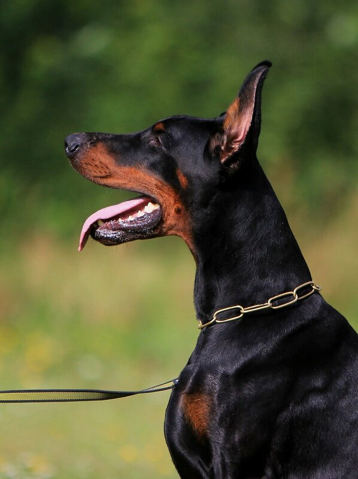
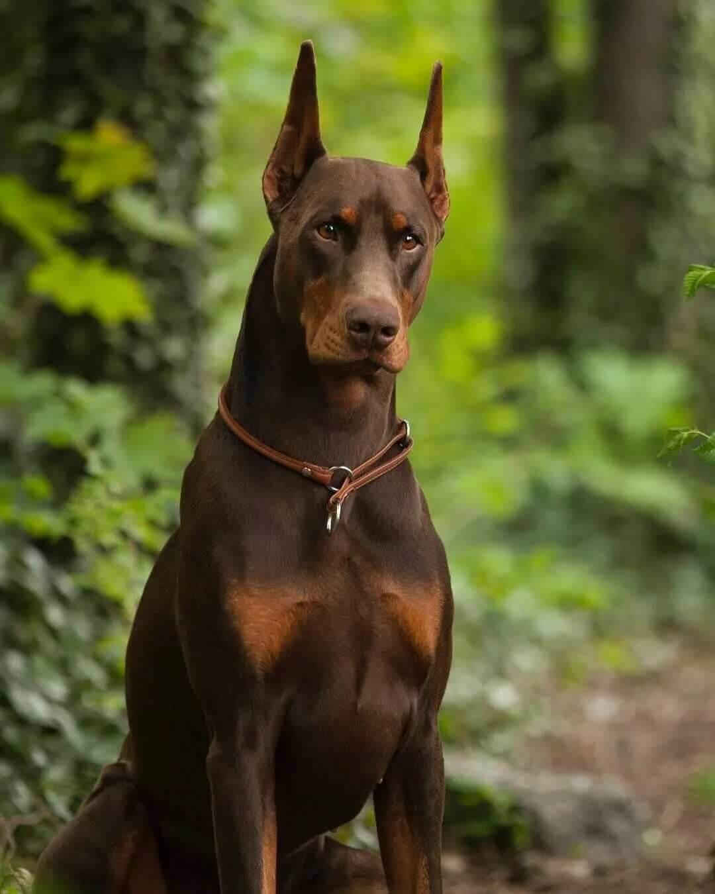
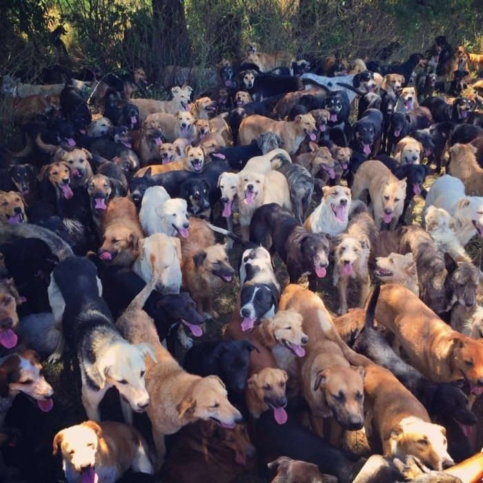

Моя любимая порода - доберманы. Мне нравятся их длинные лапы, короткая темная шерсть и длинная морда
Любимая порода

Даже несмотря на то, что это моя любимая порода, я люблю всех собак. Собаки лучшие!

О породе
Доберманы отличаются активным, энергичным характером. Обладают выраженным охранным инстинктом, как территориальным, так и направленным на охрану человека. При правильной социализации эти собаки отличаются преданностью и послушанием по отношению ко всем членам семьи.
